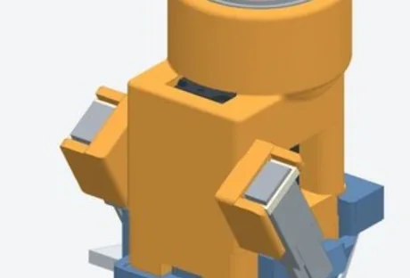
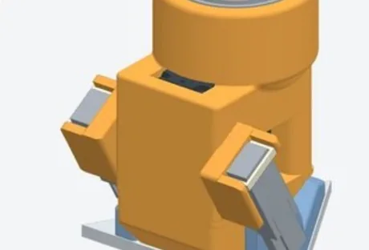
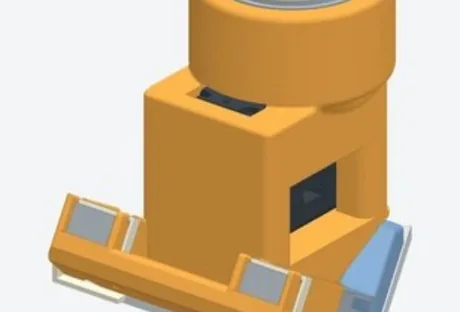
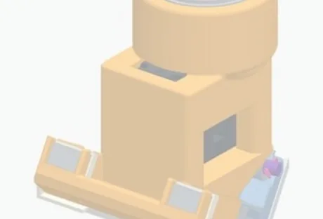
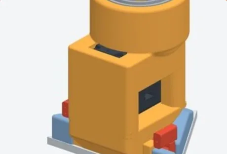
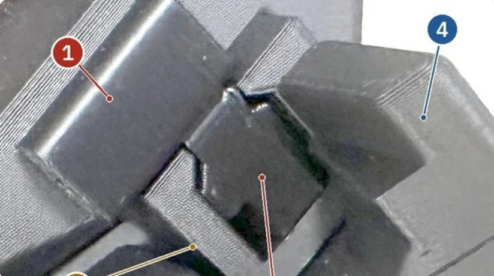
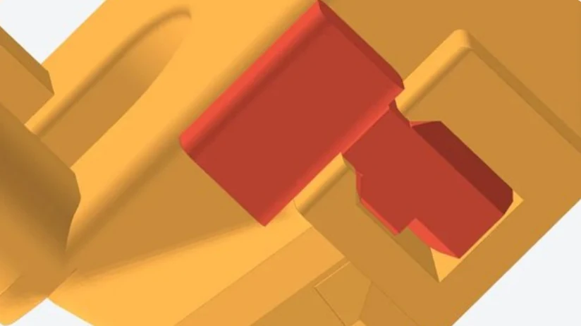

Embodied AI · Modular Robot Hardware
← Back to projects
Robot Design in Motion
Watch Droplet take shape, compare simulated gaits, and see what happens when the first printed parts meet on the workbench.
Design process · Droplet and ICOS
My AI Workflow for Robot Design
I set the hardware limits and choose the form. GPT and Claude propose CAD changes and check each other’s files. I compare candidates in MuJoCo, assemble the printed parts and use photos of anything that sticks or breaks to guide the next revision.
Choosing Droplet’s form
Checking movement and assembly in CAD
Five revisions of the ICOS leg dock
How could a leg attach to any of the shell’s 20 faces? I worked through five versions of the same connection in four days.
-

V79 · Dock plateA separate plate carries two latches.
-

V80 · Integrated rimThe rim is printed into the shell.
-

V81 · Shared mountOne interface fits all 20 faces.
-

V82 · Steel pinThe pin remained a CAD proposal.
-

V83 · Spring boltsTwo printed bolts lock the leg in place.
GPT and Claude review the pin
GPT proposed a steel pin for V82. Claude pointed out that each dock would need another loose part. I chose two printed spring bolts for V83 and checked their travel in the assembly animation below.
When a printed latch sticks

Printed dock
Same view in CADColumbia University · Robotics Studio
Droplet: A Printed Biped
Our Robotics Studio team built an eight-joint biped with printed links and flexible soles. A Raspberry Pi controls four servos in each leg.
Watch the leg assembly ↑